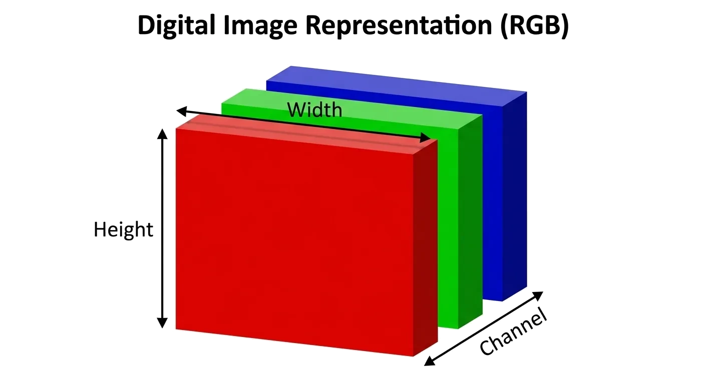
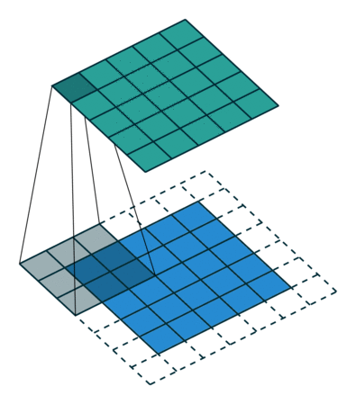

Di akhir sesi kuliah ini, mahasiswa diharapkan mampu menguasai kompetensi dasar berikut:
Menjelaskan struktur spasial, piksel, saluran warna, dan tantangan data gambar.
Memahami prinsip konvolusi, pooling, dan residual connection pada CNN.
Menggunakan model pre-trained sebagai ekstraktor fitur gambar.
Memahami struktur piksel, saluran warna, dan tantangan representasi data gambar.
Setiap gambar RGB direpresentasikan sebagai tensor tiga dimensi: tinggi, lebar, dan kanal warna.

| Tantangan | Mengapa sulit? | Konsekuensi bagi model |
|---|---|---|
| Dimensi tinggi | Resolusi gambar RGB 256 piksel memiliki \(256 \times 256 \times 3 = 196.608\) nilai piksel. | Parameter neuron fully connected tumbuh sangat besar jika mengikuti input. |
| Variasi tampilan | Pencahayaan, sudut, skala, oklusi, dan bahkan lokasi objek bervariasi. | Model perlu fitur yang robust terhadap perubahan dan variasi. |
| Ketergantungan lokal | Makna muncul dari hubungan piksel bertetangga. | Flattening (representasi dari matriks menjadi vektor) terlalu dini kehilangan struktur spasial. |
Memanfaatkan struktur lokal, parameter sharing, dan hierarki fitur untuk membaca gambar.
CNN dirancang untuk memanfaatkan struktur spasial pada data gambar.
Kernel bergerak di atas area lokal gambar dan menghitung respons untuk setiap posisi.
Setelah menghitung satu posisi, kernel bergeser untuk membentuk seluruh feature map.

Sumber: Wikimedia CommonsPooling merangkum area kecil pada feature map untuk mengurangi resolusi spasial.
Mempertahankan respons paling kuat.
Merangkum respons secara rata-rata.
CNN mengubah gambar menjadi representasi fitur secara bertahap sebelum menghasilkan keluaran tugas.
Intensitas dan warna.
Perubahan lokal.
Pola berulang.
Komponen objek.
Lapisan dangkal pada Convolutional Neural Network cenderung menangkap pola sederhana; lapisan dalam menggabungkannya menjadi representasi abstrak.
Dari jaringan konvolusional awal hingga ResNet yang memungkinkan model lebih dalam.
| Model | Kontribusi | Pelajaran desain |
|---|---|---|
| LeNet-5 | CNN awal untuk pengenalan digit. | Conv → Pool → FC sudah efektif untuk pola sederhana. |
| AlexNet | Mendorong CNN untuk ImageNet skala besar. | GPU, ReLU, dan augmentasi mengubah skala eksperimen. |
| VGG | Menumpuk kernel kecil 3×3 secara konsisten. | Kedalaman meningkatkan abstraksi, tetapi biaya komputasi naik. |
ResNet membantu jaringan yang sangat dalam belajar perubahan fitur tanpa kehilangan aliran informasi dari input.
Pertanyaan Inductive Bias: CNN menanamkan asumsi lokalitas dan hierarki spasial (bias kuat) — efisien, tetapi kaku. Vision Transformer (2020) hampir tanpa asumsi bawaan (bias lemah), membiarkan self-attention menemukan relasi antar-patch langsung dari data. Konsekuensinya: lebih fleksibel, tetapi butuh banyak data untuk melatihnya.
Inductive bias = asumsi bawaan yang ditanam ke arsitektur agar model belajar efisien dari data terbatas.
| Aspek | CNN (bias kuat) | ViT (bias lemah) |
|---|---|---|
| Unit dasar | Kernel lokal 3×3 | Patch gambar 16×16 |
| Asumsi bawaan | Lokalitas, translasi, hierarki | Hampir tanpa asumsi spasial |
| Relasi fitur | Lokal → global (bertahap) | Global via self-attention |
| Kebutuhan data | Efisien, data sedikit cukup | Lapar data → perlu pre-trained |
Memanfaatkan pengetahuan visual yang telah dipelajari untuk tugas gambar baru.
Bekukan (freeze) backbone, buang layer classifier atau head, gunakan outputnya sebagai vektor fitur.
Buka sebagian layer (atau semuanya) untuk kemudian dilatih pada data target dengan menerapkan learning rate kecil.
Augmentasi menghasilkan variasi (logis) gambar agar model tidak menghafal sampel data latih.
Dari piksel mentah ke vektor fitur 2048 dimensi dengan model pra-latih.
Amati bentuk tensor (tinggi × lebar × saluran) dan mengapa struktur spasial harus dipertahankan.
Hitung konvolusi 2D dan pooling pada contoh kecil, lalu pahami peran residual connection pada jaringan dalam.
Ubah ukuran, normalkan, lalu ekstrak fitur dengan ResNet pra-latih tanpa kepala klasifikasi.
Hitung cosine similarity antarfitur; bandingkan gambar mirip dan tidak mirip.
Benang merah representasi gambar dari struktur piksel hingga embedding visual berbasis model pre-trained.
Kunci untuk Multimodal: Representasi visual yang baik adalah fondasi untuk sistem multimodal — dari image captioning hingga visual question answering.
Diskusikan bersama rekan di samping Anda selama 3-5 menit:
Pertanyaan 1: Mengapa CNN lebih sesuai untuk gambar dibandingkan fully connected layer yang memperlakukan semua piksel sebagai fitur independen?
Pertanyaan 2: Dalam skenario apa Anda akan memilih feature extraction dibandingkan fine-tuning pada model pre-trained?
Pertanyaan 3: Transformasi augmentasi apa yang dapat mengubah label gambar pada domain tertentu, seperti citra medis atau kendaraan?
Rekomendasi literatur akademik wajib dan bacaan lanjutan:
Goodfellow, I., Bengio, Y., & Courville, A. (2016).
Deep Learning. MIT Press. — Bab 9: Convolutional Networks.
LeCun, Y., Bottou, L., Bengio, Y., & Haffner, P. (1998).
Gradient-Based Learning Applied to Document Recognition. Proceedings of the IEEE.
Krizhevsky, A., Sutskever, I., & Hinton, G. E. (2012).
ImageNet Classification with Deep Convolutional Neural Networks. NeurIPS.
He, K., Zhang, X., Ren, S., & Sun, J. (2016).
Deep Residual Learning for Image Recognition. CVPR.
PyTorch Contributors.
Models and Pre-trained Weights — Torchvision Documentation.
Pertemuan selanjutnya:
Representasi Modalitas III: Audio & Video